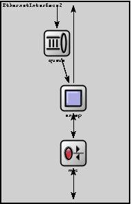
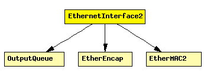

File: NetworkInterfaces/Ethernet/EthernetInterface2.ned
Ethernet network interface, which supports full-duplex operation only. Corresponds to the prototype NetworkInterface. Complements EtherMAC2 and EtherEncap with an output queue for QoS and RED support.
See also: EthernetInterface, EthernetInterfaceNoQueue
The following diagram shows usage relationships between modules, networks and channels. Unresolved module (and channel) types are missing from the diagram. Click here to see the full picture.
If a module type shows up more than once, that means it has been defined in more than one NED file.
| EtherEncap | Performs Ethernet II encapsulation/decapsulation. |
| EtherMAC2 | Ethernet MAC which supports full duplex operation ONLY. |
| OutputQueue | Prototype for per-NIC output queues. Concrete queues can implement drop-tail, RED etc. policy. |
| Name | Type | Description |
|---|---|---|
| queueType | string |
| Name | Direction | Description |
|---|---|---|
| physIn | input | |
| netwIn | input | |
| physOut | output | |
| netwOut | output |
| Name | Type | Description |
|---|---|---|
| mac.promiscuous | bool | if true, all packets are received, otherwise only the ones with matching destination MAC address |
| mac.address | string | MAC address as hex string (12 hex digits), or "auto". "auto" values will be replaced by a generated MAC address in init stage 0. |
| mac.writeScalars | bool | enable/disable recording statistics in omnetpp.sca |
| encap.writeScalars | bool | enable/disable recording statistics in omnetpp.sca |
module EthernetInterface2 parameters: queueType: string; gates: in: physIn; in: netwIn; out: physOut; out: netwOut; submodules: queue: queueType like OutputQueue; display: "i=block/queue;p=92,71;q=l2queue"; mac: EtherMAC2; parameters: queueModule = "queue", txQueueLimit = 1; // queue sends one packet at a time display: "i=block/rxtx;p=116,231"; encap: EtherEncap; display: "i=block/square;p=116,151"; connections: netwIn --> queue.in; queue.out --> encap.upperLayerIn; netwOut <-- encap.upperLayerOut display "m=n"; encap.lowerLayerOut --> mac.upperLayerIn; encap.lowerLayerIn <-- mac.upperLayerOut; mac.physIn <-- physIn; mac.physOut --> physOut; endmodule